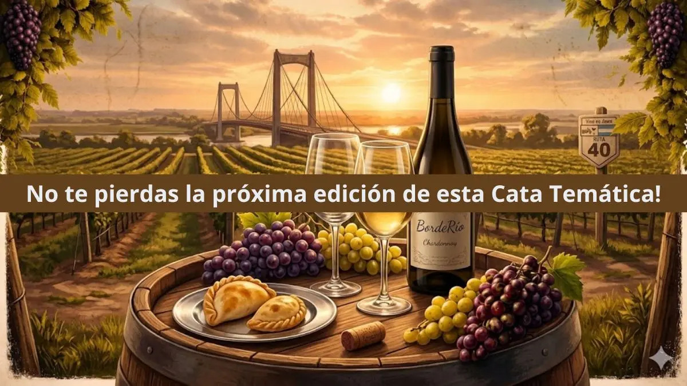

CATAEstán listos para viajar a través de los sentidos? los invitamos a una noche única, donde los paisajes y los sabores del norte se encuentran en una experiencia de maridaje espectacular.
Vamos a recorrer Tucumán, Jujuy, Catamarca y Salta a través de 5 vinos y 5 pasos gastronómicos pensados exclusivamente para potenciar cada copa